Annexe A — Mode d’emploi de ce modèle
La Figure A.1 est jolie.
L’objectif de ce modèle est de vous permettre de rédiger votre mémoire de stage en respectant les principes de la rédaction scientifique (Lindsay2011?) et de reproductibilité (Marcon2021?).
A.1 Figures
Les figures produites par du code R suivent la syntaxe suivante.

Pour appeler une figure, insérer une référence croisée : Figure A.2.
Pour une figure enregistrée dans un fichier (comme la Figure A.3), il est possible d’utiliser la syntaxe de Markdown si le titre ne contient qu’une seule ligne.
A.2 Tableaux
Les tableaux comme Tableau A.1 doivent être placés dans une division, comme les figures.
| Modèle | Autonomie | Nombre de cylindres | Cylindrée | Puissance |
|---|---|---|---|---|
| Mazda RX4 | 21.0 | 6 | 160 | 110 |
| Mazda RX4 Wag | 21.0 | 6 | 160 | 110 |
| Datsun 710 | 22.8 | 4 | 108 | 93 |
| Hornet 4 Drive | 21.4 | 6 | 258 | 110 |
A.3 Équations
Les équations en ligne sont entourées par un simple $, alors que les équations numérotées le sont par $$ et sont nommées pour permettre leur référencement (Équation A.1) :
\[A = \pi r^2 \tag{A.1}\]
A.4 Bibliographie
Insérez les références à partir de Zotero en mode visuel (Insert / Citation) ou bien utilisez le plug-in Better BibTeX de Zotero pour exporter un dossier de références automatiquement à chaque modification.